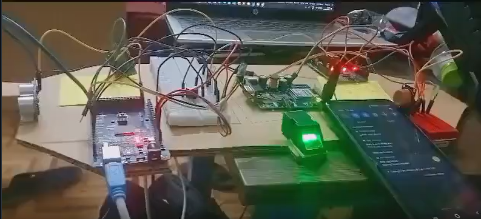
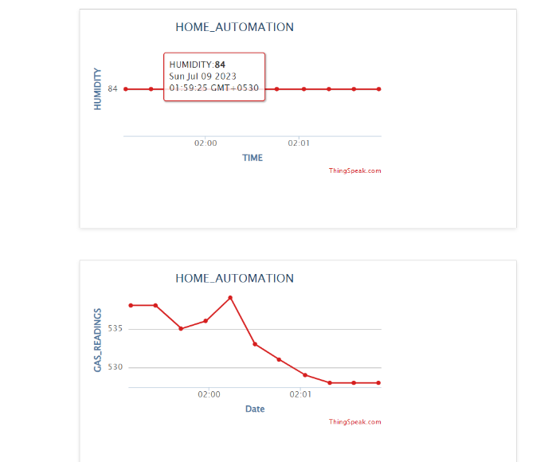
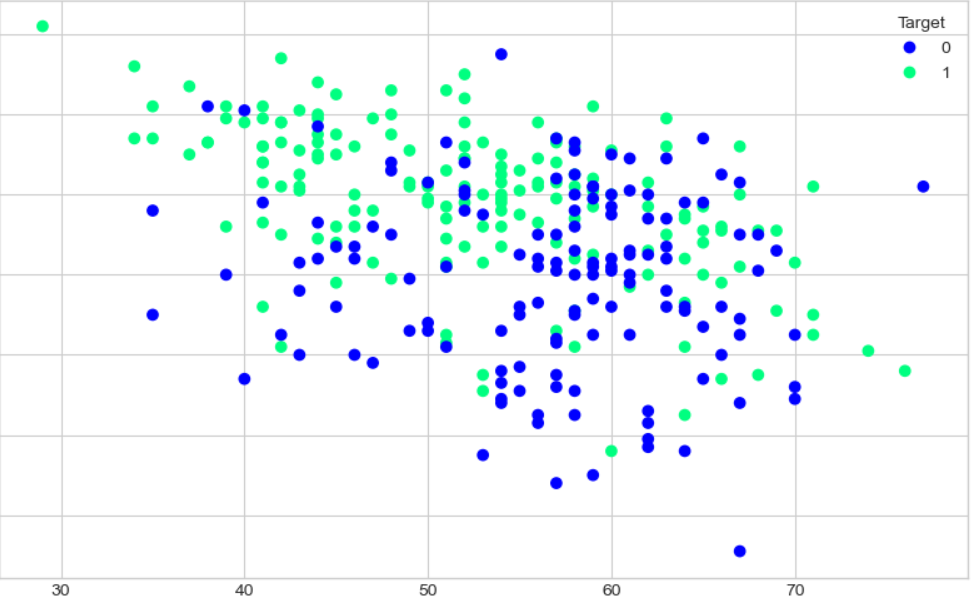
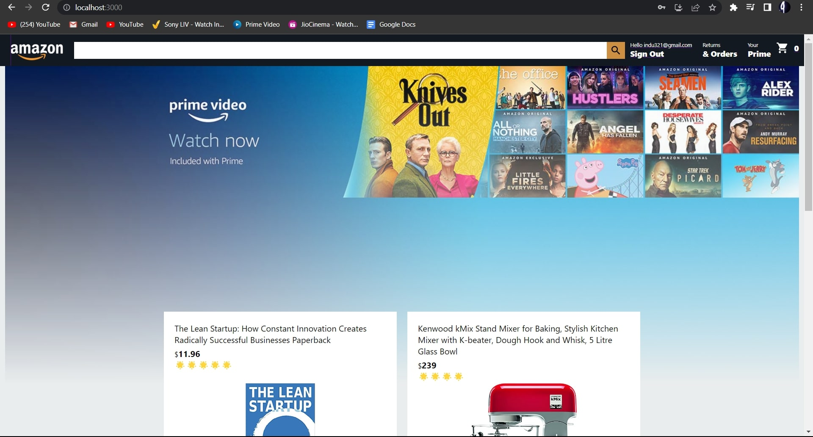
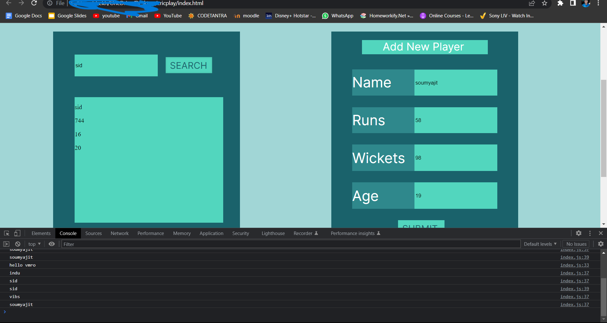

Smart Car
A smart car mechannism which detects either driver is drunk or if an intruder as entered the car and if so sends an sms with live location regarding the same
The fingerprint sensor authorizes the entry of the authorized driver in the car The pir sensor detects and AUTHORIZES any person has entered the person. THE PIR DOESNT DETECT ANYTHING Hence if an intruder has entered the car then an alert sms will be sent to us
Home Automation
AN IOT PROJECT(USING ARDUINO,PYTHON,HTML) INTEGRATED WITH THINGSPEAK AND MIT APP INVENTOR WITH A COMBINATION OF SENSORS AND BLUETOOTH ,ALSO A WEBSITE IS CREATED WHICH SHOWS THE GRAPH VALUES FRM THINGSPEAK
Bulldozer Sales_price Prediction
I will be predicting the sale price of bulldozers using Machine Learning (Time series data)..This is a REGRESSION problem with TIME SERIES DATA
Amazon Clone
Aspiring web developer with a passion for building exceptional online experiences. Developed a Cloned Amazon Full Stack application using React and Firebase, replicating the functionality and user experience of the renowned e-commerce platform.
This project showcased a deep understanding of web development principles, strong problem-solving skills, and an ability to deliver high-quality applications. Through this experience, I honed my expertise in React and Firebase, solidifying my foundation in frontend and full-stack development.You can vist the code here.
Cric-Play
As an enthusiastic developer, I designed and developed a cricket-playing app that stores data in JavaScript and incorporates functionalities such as search, delete, and add operations.
Through this project, I gained practical experience in JavaScript programming and learned how to manipulate and manage data within the app. By implementing search, delete, and add functions, I honed my skills in data handling and created an interactive user experience.